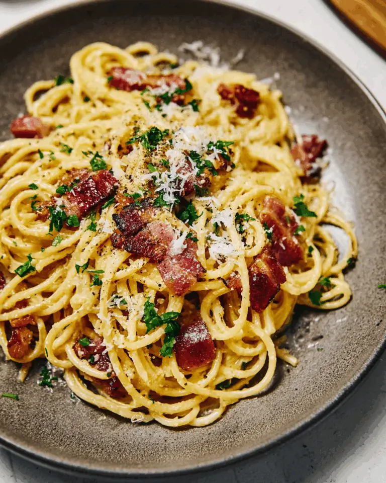

Carbonara Recipe
Home

Description
Carbonara is a classic Roman pasta made with just a few ingredients: spaghetti, guanciale (cured pork cheek), eggs, Pecorino Romano, and black pepper. There is no cream in the traditional version.
The sauce comes entirely from the eggs, cheese, and pasta water.
The dish is rich, peppery, and savory, with a silky sauce that coats every strand. The key is to combine everything off the heat so the eggs make a creamy sauce instead of scrambling.
Ingredients
- 200 g spaghetti
- 100 g guanciale
- 2 whole eggs + 1 egg yolk
- 50 g Pecorino Romano
- Freshly ground black pepper
- Salt for the pasta water
Steps
- Cut the guanciale into small strips and cook in a dry pan over medium heat until crisp
- Whisk the eggs, yolk, grated cheese, and plenty of black pepper in a bowl until it forms a thick paste
- Boil the spaghetti until al dente
- Add the pasta to the pan with the guanciale, off the heat and toss in the faf
- Pour in the egg and cheese mixture
- Serve immediately with extra Pecorino and pepper